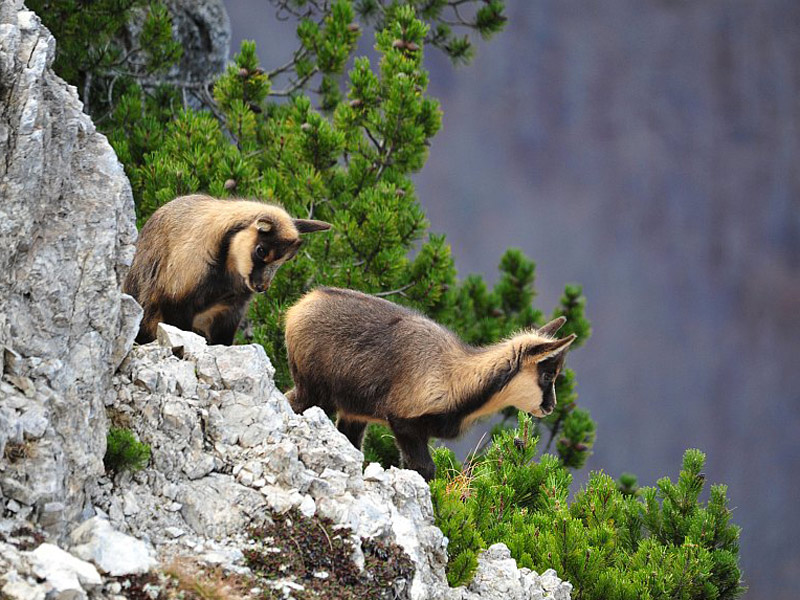

PARCO NAZIONALE D’ABRUZZO, LAZIO E MOLISE
“Tra foreste vetuste e specie rare, un paradiso appenninico dove la natura regna sovrana.”
“Tra foreste vetuste e specie rare, un paradiso appenninico dove la natura regna sovrana.”
Fondato nel 1923, il Parco Nazionale d’Abruzzo, Lazio e Molise è uno dei più antichi e prestigiosi parchi italiani. Si estende su un territorio prevalentemente montuoso e ricco di foreste, nel cuore dell’Appennino centrale.
La sua importanza è legata alla presenza di specie simbolo come l’orso bruno marsicano e il lupo appenninico, ma anche alla bellezza naturale di valli, torrenti e altopiani in cui il tempo sembra essersi fermato.
I borghi che punteggiano l’area protetta conservano tradizioni locali millenarie, offrendo un connubio perfetto tra natura incontaminata e cultura appenninica.
Visitare questo parco significa entrare in contatto con un pezzo fondamentale della storia della conservazione italiana e con paesaggi che in ogni stagione assumono un fascino particolare.
Il cuore del Parco è il Cratere del Vesuvio, che può essere raggiunto tramite un percorso panoramico culminante in un’area di osservazione posta a circa 1.200 metri di altitudine.
Da lassù, si gode di una vista incomparabile sul Golfo di Napoli, con le isole di Capri, Ischia e Procida all’orizzonte. A poca distanza si trova la Valle dell’Inferno, un itinerario affascinante che attraversa boschi di lecci e antiche colate laviche, mettendo in evidenza la potenza delle eruzioni passate.
Sono meritevoli di visita anche le Ville Vesuviane, costruite nel Settecento lungo il celebre Miglio d’Oro, testimonianza del periodo in cui la nobiltà napoletana sceglieva le pendici del Vesuvio come luogo di villeggiatura.
Per chi è interessato all’archeologia, i siti di Pompei, Ercolano e Oplonti si trovano appena fuori i confini amministrativi del parco, ma rappresentano tappe imprescindibili per chi desidera comprendere la storia di questo territorio.

All’interno del parco si possono intraprendere diversi itinerari di trekking, sia di bassa che di media-alta difficoltà, studiati per far conoscere la ricchezza biologica del territorio.
Alcune escursioni guidate hanno come obiettivo l’avvistamento dell’orso marsicano o del camoscio, in orari particolarmente favorevoli, come l’alba o il tramonto.
Gli appassionati di mountain bike trovano percorsi che alternano salite impegnative e discese panoramiche, mentre in inverno alcune zone offrono la possibilità di praticare sci di fondo o escursioni con le ciaspole.
L’osservazione faunistica e il birdwatching sono attività in crescita, grazie alla presenza di rapaci come l’aquila reale e di uccelli acquatici che stazionano lungo i corsi d’acqua.
Per chi ama la cultura locale, i laboratori didattici organizzati dal parco o da associazioni locali consentono di approfondire argomenti come la caseificazione tradizionale, l’apicoltura e la lavorazione della lana.
Numerosi eventi e sagre, soprattutto nei mesi estivi, animano i borghi, celebrando prodotti tipici come il pecorino, i salumi di montagna e le zuppe a base di cereali antichi.

Il Parco Nazionale d’Abruzzo, Lazio e Molise è noto in particolare per la fauna selvatica di grande pregio: l’orso bruno marsicano, sottospecie endemica dell’Appennino centrale, ne è l’emblema e testimonia l’eccellente stato di conservazione dell’habitat.
Un altro simbolo è il lupo appenninico, spesso difficile da avvistare ma fondamentale per l’equilibrio ecologico.
Non mancano cervi, caprioli e cinghiali, che talvolta si spingono fino a valle in cerca di cibo. Il camoscio appenninico, considerato uno dei più belli al mondo per la forma aggraziata e il manto, trova qui uno dei suoi ultimi santuari.
Le foreste di faggio coprono una larga porzione del parco, regalando un ambiente ombroso e ricco di humus. In prossimità dei corsi d’acqua, crescono salici e ontani, mentre le zone più alte ospitano praterie e pascoli alpini.
Questa varietà vegetale favorisce la biodiversità e offre al visitatore scenari sempre nuovi, dai fondovalle verdissimi alle cime rocciose.
Il parco si estende tra tre regioni, Abruzzo, Lazio e Molise, e si raggiunge comodamente in auto da Roma, Pescara o Napoli in poche ore di viaggio. Alcuni paesi, come Pescasseroli, sono serviti anche da autobus di linea, soprattutto nei periodi di alta stagione turistica.
Prima di intraprendere un’escursione impegnativa è consigliato informarsi presso i Centri Visita sullo stato dei sentieri e sulle condizioni meteo, evitando di avventurarsi da soli in aree remote se non si possiede sufficiente esperienza. In alcune zone vigono restrizioni per proteggere l’orso e altri animali sensibili al disturbo umano: è bene seguire la segnaletica e le indicazioni delle guide.
Sul piano ricettivo, la zona offre un’ampia scelta di hotel, B&B, campeggi e agriturismi, spesso a conduzione familiare, ideali per assaporare la genuinità dei prodotti tipici e per entrare in contatto con la vita del luogo. Chi desidera trascorrere più giorni nel parco, può valutare anche le escursioni di più tappe con pernottamento nei rifugi, vivendo un’esperienza a stretto contatto con la natura.
Grazie all’impegno continuo degli enti di tutela e all’attenzione crescente per il turismo sostenibile, il Parco Nazionale d’Abruzzo, Lazio e Molise resta un baluardo di biodiversità e un luogo incantevole per chi desidera scoprire la vera essenza delle montagne appenniniche.